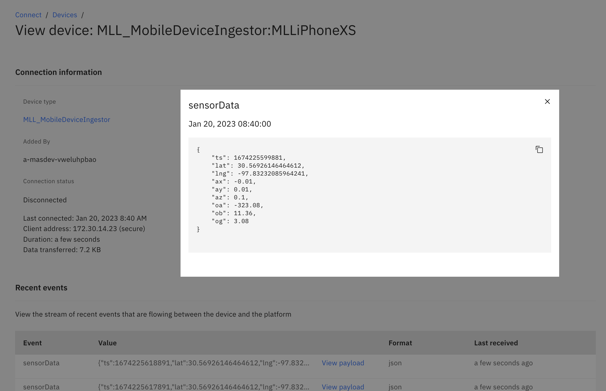

Objectives
In this Exercise you will verify the data is being sent and is persisted in Monitor
Verify events are being sent to Monitor
- Go to Connect in Monitor
- Search for the name of your Device created in a previous step
- See the events coming in
- Click on an event to see the payload being sent from your mobile device 
Verify data is in Monitor
- Go to Setup in Monitor
- Click on the Device Type created earlier in the lab
- Click on the black button "Set up device type"
- On the left side open Metric
- Click on a metric and see the max and min trend
- Click on Data table to see the values of that metric
- Verify that data come from your device by looking at the Device ID column
- If you cannot see data go back to the Troubleshooting section on the previous page
- Congratulations! You have ingested data from your mobile device into Monitor
- Now you can explore creating calculated data metrics and dashboards in Monitor